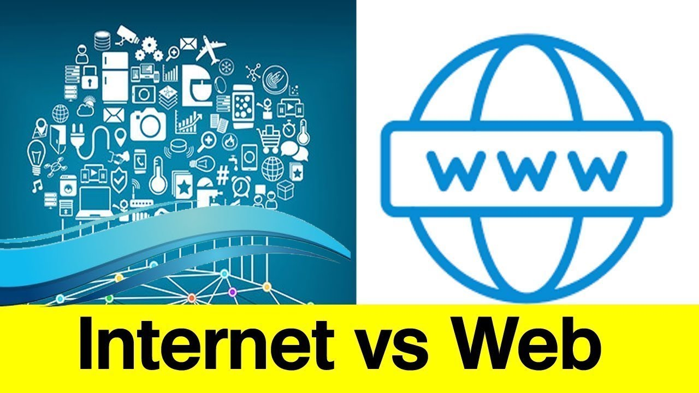

The web vs the internet. What is the differences?

Over the years, the web has become synonymous with the internet. This is a common misconception, as there are significant differences between the two. The worldwide web is defined as a network of web pages found by their addresses. While the internet is defined as the networks of networks that provide the basis for the web. The web is one of the main ways of access the internet but it is not the only way you can use the internet. With the creation of mobile apps and other similar technology’s the use of the world wide web has decreased and the use of the internet has increased
The Internet
The Internet can be seen as the “hardware”. It is a collection of networks that are connected to each other through the use of the TCP/IP protocol suite. It is a global system of interconnected computer networks that links devices worldwide. The internet connects millions of computers together. The internet makes it possible for any device to communicate with any other device. Each device is independent from other devices.
The Web
The web is a collection of Web Pages that are found on the network of computers. It can be thought of as the “software” part. It is a way to access information over the internet. Online content that is formatted in HTML and accessed via HTTP protocol. The web is an application that has been built on the internet. The web makes it easier to access html documents that are linked together using hyperlinks, and makes it easier to access the world wide web.
The main difference is that the World Wide Web is merely one of the services that are provided by the Internet. Several other services
exist on the Internet, such as e-mail, online chat services and file transfer services. Each of these services provide their own
benefits to both business and individuals.